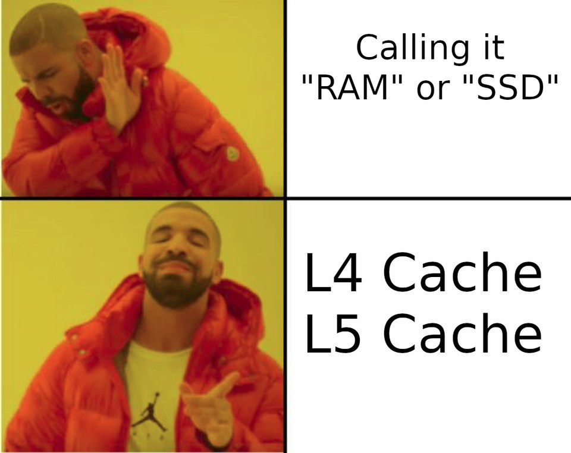
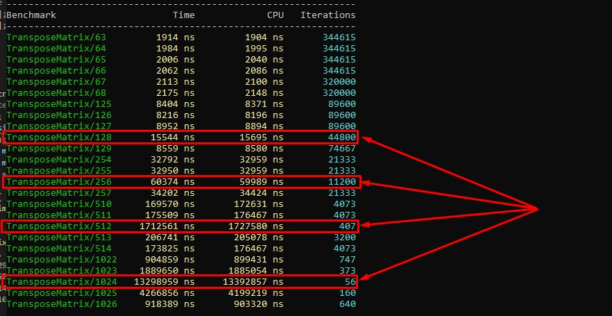
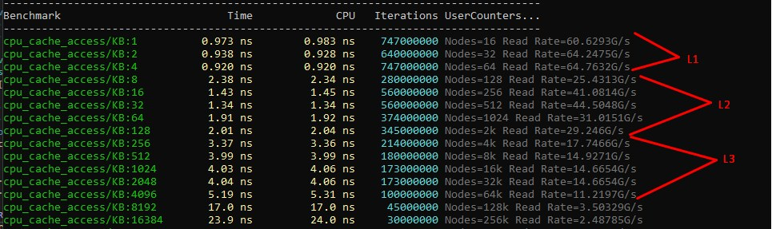

Вы не задавались на первый взгляд тривиальным вопросом: почему в процессоре есть уровни кэша, если можно было бы взять один большой? Ответ на этот вопрос тесно переплетается с физикой полупроводников, историей архитектуры процессоров и тем, как компиляторы научились использовать иерархию памяти.
Первое, что нужно понять: процессор не является абстрактным вычислителем, а вполне себе реальный кусок кремния размером примерно с ноготь большого пальца, на котором размещены миллиарды транзисторов и когда мы говорим «данные передаются из памяти в регистр», то мы буквально имеем в виду, что электрический сигнал проходит по металлическому проводнику длиной в несколько миллиметров или сантиметров. И это тоже расстояние, пусть и ничтожное по человеческим меркам, но при тактовой частоте 3–4 ГГц оно уже имеет значение, просто потому что за один такт сигнал в идеальных условиях будет проходить всего 10 сантиметров, а в металлическом проводнике на кристалле и того меньше.
Другими словами, путь сигнала по проводу между двумя точками на чипе не будет мгновенной телепортацией данных, потому что это физическая среда с задержкой, сопротивлением и энергопотреблением, пропорциональным длине, и именно это физическое ограничение делает один большой кэш невозможным, и чем дальше от ядра лежит ячейка памяти, тем дольше нужно ждать ответа.
Физика диктует архитектуру
Если взять весь кэш современного CPU, что-то около 2Мб, и сделать из него одну большую кладовку, то ядру при каждом обращении придётся туда ходить, ждать пока сигнал дойдёт возможно до самого дальнего угла и вернётся обратно. И чем больше кэш, тем сложнее его схема адресации, тем больше энергии потребляется при каждом обращении, и тем хуже плотность. Быстрые SRAM-ячейки L1 занимают гораздо больше площади, чем весь медленный L2, поэтому проектировщики чипов в итоге пришли к естественной иерархии: рядом с ядром будет маленький и быстрый кэш, а дальше сделаем больший и медленный, ещё дальше разместим ещё больше и ещё медленнее.
Чтобы прочувствовать логику иерархии не в абстракции, а на понятном примере, представьте что собираете новогоднюю елку декабрьским вечером, развешивая на ней игрушки. В руках у вас маленькая коробочка, где лежат пять-шесть игрушек, которые вы отобрали только что, и взять любую из них будет делом пары секунд, это и есть наш L1-кэш под рукой.
Рядом на стуле стоит картонный ящик, куда накануне были высыпаны игрушки из запасов и чтобы достать что-то оттуда, нужно потянуться рукой, немного покопаться, найти нужную форму или цвет. Это всё будет занимать больше времени и это L2-кэш, который заметно больше, чуть медленнее, но всё ещё в пределах досягаемости с того же места.
Но ящик тоже не бездонный, и когда-то в нём закончится нужный тип игрушек и тогда уже приходится идти в соседнюю комнату, где лежит большой мешок с основным запасом. Т.е. нужно встать, выйти, покопаться в мешке, найти то, что хочется, и вернуться обратно, что будет перерывом в непростом деле украшения ёлки, и займет заметное время. Это будет нашим L3-кэшем с большим ресурсом, доступ к которому требует усилий и времени, но зато там есть почти всё.
И наконец, на чердаке стоит старый комод, где хранятся ёлочные игрушки ещё с советских времён: редкие, интересные, но достать их равняется экспедиции и, вообще нужно найти лестницу, подняться, и найти что-то среди этих завалов. Пока вы это делаете, работа у ёлки полностью стоит, это аналог оперативной памяти с огромной ёмкостью, но задержка настолько велика, что за это время можно было повесить с десяток игрушек. Знакомо?
И заметьте, пока я рассказывал эту аналогию у вас не пришло в голову убрать все четыре хранилища и заменить их одним гигантским стеллажом прямо в комнате. Формально это было бы «всё будет в одном месте», но коробочка в руках резко перестает быть коробочкой в руках и превратится в один из уголков огромного стеллажа, до которого всё равно нужно тянуться, и весь выигрыш от «под рукой» исчезает. Именно поэтому нельзя просто взять и сложить 32 КБ + 256 КБ + 2 МБ в один L1, потому что физически большой кэш не может быть физически быстрым.
Исторический контекст
Иерархия кэша в процессорах появилась далеко не сразу, и история её развития хорошо иллюстрирует, насколько это решение было продиктовано физическими и экономическими ограничениями, а не теоретическими соображениями. Первые процессоры конца 1970-х не имели никакого аппаратного кэша вообще и работали напрямую с внешней памятью, а задержки были сопоставимы с временем одного такта, так что разрыва почти не было, и проблема была неощутима.
Когда в начале 1980-х процессоры начали ускоряться быстрее, чем память, производители добавили небольшой кэш сначала на плату, а затем и на кристалл. В 1989 году вышел i486, ставший первым массовым процессором со встроенным L1-кэшем прямо на кристалле, унифицированным для инструкций и данных. И тогда же компиляторы (в первую очередь Borland C++) начали применять такое понятие как локальность данных, оптимизируя размещение переменных и порядок объявлений в структурах и стараясь уложить горячие поля рядом, хотя никакой формальной модели кэша у компиляторов тогда ещё не было, и всё это делалось эмпирически.
Pentium в 1993 году разделил кэш на два (для данных и для инструкций), потому что разные физические требования к двум типам трафика наконец получили отражение в железе. Компиляторы постепенно учли и это, и майки стали разделять секции кода и данных аккуратнее, а GCC получил оптимизации выравнивания функций для улучшения попадания в кэш инструкций. С появлением Pentium Pro в 1995 году L2-кэш впервые вынесли на отдельный чип и иерархия стала явной и двухуровневой. А уже к эпохе Nehalem (2008) сложилась знакомая нам трёхуровневая схема с раздельными L1I и L1D, унифицированным L2/L2ID на ядро и общим L3.
LLVM, который появился как раз в этот период, вобрал предыдущие знания и изначально проектировался с учётом этой иерархии, включая проходы для loop tiling, prefetching и hot data layout.
Разные типы обращений требуют разных структур
В разговорах часто упускают, что L1D (кэш данных) и L1I (кэш инструкций) — это принципиально разные устройства с разными требованиями, и именно поэтому их нельзя слить в одно даже при одинаковом объёме. Так L1D читает и записывает отдельные элементы размером от 1 до 8 байт и должен поддерживать одновременно несколько портов чтения и записи, обрабатывать store forwarding и следить за когерентностью с другими ядрами. А L1I со стороны ядра строго read-only, и это позволяет сильно упростить его схему, но зато он должен обеспечивать гигантскую пропускную способность, и например Intel Core i7 при выборке из L1I способны считывать 16 байт каждый такт, что при тактовой частоте 3 ГГц даёт порядка 50 ГБ/с только для инструкций. Если сложить пиковый трафик инструкций и пиковый трафик данных, требования к единому кэшу окажутся взаимоисключающими и попытка сделать универсальный кеш под обе задачи означало бы ухудшить и то, и другое.
Ещё одна фундаментальная причина иметь отдельные уровни кэша состоит в разграничении приватного и общего пространства. Возвращаясь к аналогии с ёлкой: коробочка в руках будет исключительно вашей, и никто другой (кроме вашей жены, шутка), к ней не лезет, и именно поэтому вы можете работать с ней без каких-либо условий. L1D приватный и позволяет ядру просто читать и писать без какой-либо координации, и именно эта приватность даёт тот самый однотактовый доступ, который так важен для конвейера. L1I приватный по понятным причинам.
L2 тоже приватный, но уже берёт на себя некоторую часть шинного трафика и взаимодействия с другими ядрами, что конечно сказывается на скорости работы. А L3 физически общий ресурс, как мешок с игрушками, который в принципе могут использовать все члены семьи, и именно поэтому доступ к нему требует координации через протокол когерентности (MSI, MESI, MESIF, MOESI, MOSI, MOESIF, STANFORD DASH, SGIODP); расчёт при этом делается на то, что два предыдущих уровня уже сократили число обращений настолько, что координация не становится узким местом.
Кто все эти люди?
MSI один из самых ранних протоколов когерентности кэша. Он использует три состояния: Modified, Shared и Invalid. Когда процессор изменяет данные, строка переходит в состояние Modified, и все другие копии в кэшах становятся Invalid, если данные читаются несколькими ядрами, строка находится в состоянии Shared.
Проблема MSI заключается в том, что он не имеет состояния Exclusive, поэтому даже если строка используется только одним ядром, система не знает этого и в результате возникают лишние операции на шине при переходе к записи, что увеличивает трафик и снижает производительность.
MESI расширяет MSI добавлением состояния Exclusive. Если кэш-линия присутствует только в одном кэше и совпадает с памятью, она получает состояние Exclusive и это позволяет процессору перейти к записи без дополнительной синхронизации с другими кэшами.
Недостаток MESI проявляется в системах с большим количеством ядер, когда при совместном использовании данных строки часто переходят между состояниями Shared и Modified, вызывая дополнительный трафик на шине и состояние cache line bouncing.
MOESI добавляет к MESI состояние Owned и позволяет одному кэшу хранить модифицированную строку и одновременно делиться ею с другими кэшами без немедленной записи в основную память. Другие кэши могут читать эту строку в состоянии Shared, а владелец остается ответственным за обновлённые данные.
Недостатком MOESI является более сложная логика управления состояниями и поддержка состояния Owned усложняет аппаратную реализацию и может увеличивать задержки в системах, где часто происходит запись в память.
MESIF основан на MESI и добавляет состояние Forward, когда несколько кэшей имеют одну и ту же строку, один из них назначается Forward и отвечает за передачу данных другим ядрам при чтении, что предотвращает ситуацию, когда несколько кэшей одновременно пытаются ответить на один запрос.
Недостаток протокола проявляется в системах с интенсивными записями, когда при частых изменениях данных состояние Forward не приносит значительной пользы, а дополнительные состояния увеличивают сложность реализации.
MOSI упрощённая версия MOESI, где отсутствует состояние Exclusive, но использует состояния Modified, Owned, Shared и Invalid с возможностью делиться модифицированной строкой через состояние Owned, что уменьшает количество операций записи в память.
Недостаток заключается в отсутствии состояния Exclusive, и даже если строка используется только одним ядром, система не может оптимизировать переход к записи, что приводит к дополнительному трафику когерентности.
MOESIF объединяет идеи протоколов MOESI и MESIF и содержит состояния Modified, Owned, Exclusive, Shared, Invalid и Forward, и это позволяет одновременно оптимизировать передачу данных между кэшами и делиться модифицированными строками без немедленной записи в память.
Недостатком является высокая сложность реализации с большим количеством состояний, что увеличивает сложность аппаратной логики и может приводить к дополнительным задержкам при переходах между состояниями.
Stanford DASH один из протоколов когерентности, и в отличие от MESI, где все процессоры слушают общую шину, здесь используется специальная таблица, которая хранит информацию о том, какие кэши содержат конкретную строку памяти. Когда процессор хочет прочитать или изменить строку, он обращается к таблице, у каких процессоров есть копии строки, и отправляет им сообщения, что позволяет масштабировать систему на десятки и сотни процессоров без перегрузки общей шины.
Недостатком такого подхода является дополнительная память и задержки, связанные с хранением и обновлением таблицы, но каждое обращение может требовать дополнительных сетевых сообщений, что увеличивает общее время по сравнению с простыми протоколами в небольших системах.
Протокол SGI Origin Directory Protocol (ODP) использовался в многопроцессорных системах SGI Origin 2000, где информация о владельцах кэш-линии хранится в распределённой таблице, привязанной к узлам памяти. Когда процессор изменяет данные, он отслеживает все кэши, содержащие копии строки, и рассылает сообщения об инвалидации, что позволяет эффективно масштабировать систему на большое количество процессоров и узлов памяти.
Недостатком является сложность реализации и высокая стоимость обмена сообщениями между узлами, но доступ к удалённой памяти может иметь значительно большую задержку, а directory-сообщения могут создавать дополнительную нагрузку на межсоединение между узлами.
Как это влияет на программирование
Всё это имело бы лишь теоретический интерес, если бы не оказывало прямого влияния на то, как пишут и как компилируют код, потому что код, обрабатывающий данные последовательно и предсказуемо, работает в разы быстрее, чем тот, что делает тоже самое, но хаотично. Классический пример тут будет обход двумерного массива: если внешний цикл идёт по строкам, а внутренний по столбцам, данные попадают в кэш одной линией на несколько итераций; если перепутать циклы местами, каждое обращение к новому элементу будет промахом кэша и поездкой в L3 или DRAM при большом размере массива. Разница в производительности на реальных задачах вроде матричного умножения или сортировки может достигать десяти и более раз, и именно поэтому компиляторы научились делать loop interchange, loop tiling и prefetch insertion автоматически. Если хочется больше технических деталей, то вам сюда Cache pollution? Запасайтесь тестами

Знаменитое разделение AoS (Array of Structures) и SoA (Structure of Arrays) тоже прямое следствие того, что L1-кэш работает линиями по 64 байта, а если вы обрабатываете только одно поле объекта, а сам объект весит 128 байт, вы загружаете в кэш ненужный балласт и вдвое уменьшаете эффективную ёмкость кэша для текущей логики.

А нужен ли нам L4-кэш?
Если логика иерархии такова, что каждый новый уровень даёт выигрыш за счёт большего объёма при приемлемой задержке, то возникает нормальный вопрос: «почему мы остановились на трёх уровнях и не добавляем четвёртый»? Ответ, как и всегда, лежит в физике процессоров, экономике разработки и реальных паттернах применения и, что интересно, L4-кэш уже существует в некоторых системах, просто мы его так не называем.
Возвращаясь к аналогии с ёлкой: представьте, что между чердаком и соседней комнатой с мешком вы поставили ещё один промежуточный ящик и формально это могло бы ускорить доступ к части игрушек из комода, если бы нам нужно было часто ходить на чердак, достаточно было захватывать на обратном пути некоторый набор игрушек, а потом только заглянуть в коридор.
Но, как я уже сказал, выигрыш будет заметен только в том случае, если нам действительно надо часто ходить на чердак, то есть если наш рабочий набор достаточно велик, чтобы не помещаться в мешок, но он все равно часто нужен, чтобы коридорный ящик был оправдан. Но если же мы каждый раз берём что-то новое с чердака, то коридорный ящик просто добавит лишнее перекладывание, не давая никакого ускорения, но добавляя время на него и дополнительные проблемы.
Именно это соображение определяет судьбу L4-кэша в реальных процессорах и он имеет смысл только тогда, когда рабочий набор программы систематически превышает ёмкость L3, но при этом достаточно горячий, чтобы обращения к DRAM были узким местом. Такой паттерн обращения к памяти это довольно специфический сценарий, характерный для серверных баз данных, больших задач телеметрии и некоторых графических приложений вроде рендеров для фильмов. Для типичного десктопного приложения L3 объёмом 8–32 МБ с лихвой перекрывает большинство рабочих наборов, и добавление ещё одного уровня банально не даст ощутимого прироста.
Тем не менее такие приложения иногда пролезают в область обычной разработки, и для них уже было несколько попыток построить полноценный L4 кеш, самый известный пример был у Intel Haswell-GT3e с его eDRAM, выпущенный в 2013–2014 годах. Там на подложке рядом с кристаллом процессора размещался отдельный кристалл eDRAM объёмом 128 МБ, который выступал как общий кэш четвёртого уровня для CPU и интегрированного GPU одновременно. Задержка eDRAM была выше, чем у SRAM-кэшей, но в несколько раз ниже, чем у обычной DDR3/DDR4, и для графических задач вроде монтажа фильмов и тяжелого рендера, где рабочий набор текстур легко превышал десятки мегабайт, выигрыш был ощутимым, порядка x2-x3 при перемонтаже фильмов, что во временном исчислении превращало обработку из 12-14 часов на 2 часовой фильм всего в несколько часов.
Компилятор при этом ничего не знал об этом уровне и был полностью прозрачен для программного обеспечения, аппаратный предвыборщик сам решал, что туда класть. Intel продолжал экспериментировать с этой идеей в линейке Iris Pro вплоть до Kaby Lake, но в итоге отказался от неё, потому сложность производства и стоимость такого процессора делали его решением очень нишевым.
Параллельно похожий подход развивался в мире HBM (High Bandwidth Memory). Идея памяти с очень широкой шиной, которую AMD и Intel начали интегрировать в высокопроизводительные GPU и серверные процессоры, представляет собой дополнительный кристалл SRAM, рядом с обычным кешем и это, по сути, аппаратный L4, хотя AMD позиционирует его как расширенный L3. Выигрыш для серверных рабочих нагрузок получился значительным, а в отдельных серверных задачах до 50% прироста производительности, так что технология стала стандартной для серверного сегмента.
Что касается компиляторов, то поддержка явного L4 в них так и не появилась, и все они оперируют моделью «горячие данные должны помещаться в кэш», но не указывая конкретный уровень (это отдельная история, потому что иметь возможность указывать желаемый уровень хранения высвободило бы до 20% перфа в играх), и автоматические оптимизации вроде loop tiling параметризуются размером кэш-линии и примерными размерами уровней через разные флаги вроде -mtune=skylake, но не через явную уровневую модель. Более тонкое управление, когда мы сами планируем размещение горячих структур данных в huge pages, явные prefetch-подсказки через __builtin_prefetch или __mmprefetch все также остаётся уделом ручной оптимизации в критичных для производительности кейсах.
Таким образом, L4-кэш уже не фантастика и даже не будущее, а вполне себе реальность в нишевых сценариях, но его массового появления в десктопных процессорах ждать не стоит. Потому что каждый новый уровень иерархии добавляет сложность когерентности, стоимость производства и специализированные схемы управления, которые оправданы только тогда, когда профиль рабочей нагрузки это требует. Коридорный ящик между мешком и чердаком действительно помогает, но только если вы живёте рядом с чердаком и часто туда ходите.
Ну L5 то точно не нужен?
L5 в иерархии кэша CPU как отдельный уровень нигде не фигурирует в качестве производственного решения, но это не значит, что идея пяти уровней невозможна, просто она упирается сразу в несколько стен.
Каждый новый уровень иерархии требует решения двух проблем одновременно: он должен быть достаточно быстрее DRAM, чтобы оправдывать своё существование, и достаточно дешевле предыдущего уровня по площади кристалла или стоимости производства, чтобы вообще иметь смысл. С L4 это ещё удаётся, и те же eDRAM и HBM дают в 3–5 раз меньшую задержку, чем DDR5, при разумной стоимости, но L5 оказывается в ситуации, когда между ним и L4 уже нет достаточного разрыва ни по скорости, ни по плотности, чтобы вставить туда что-то принципиально новое.
Проблема когерентности тоже нарастает нелинейно: каждый новый уровень, который разделяется между ядрами, требует усложнения протокола MESI/MOESI, добавляет новые классы гонок и увеличивает время согласования, создавая новые классы конфликтов при инвалидации. Три уровня уже будет сложной инженерной системой, четыре выливается в нишевые решения для специфических нагрузок, а пять уже фактически та точка, где сложность управления, вероятно, начинает съедать весь потенциальный выигрыш.
Но не все так однозначно, и вместо добавления ещё одного уровня кэша индустрия пошла по другим путям, которые по смыслу выполняют ту же функцию, но называются иначе. Как я уже написал AMD 3D V-Cache, формально позиционируемый как расширенный L3, но физически является отдельным кристаллом SRAM, уложенным поверх вычислительного чипа и в некоторых архитектурных моделях его вполне можно считать L4. Но тот же Intel вводит понятие «High Bandwidth Cache» или «Memory-side Cache», намеренно уходя от нумерации и в серверных системах такая сущность фактически выполняет роль «L5» с точки зрения задержки, и он быстрее диска, но в несколько раз медленнее локальной DRAM, но только это уже не кэш в аппаратном смысле, а просто другой регион адресного пространства с другими латентностями.
Если рассуждать спекулятивно, то единственным реалистичным сценарием для L5 будут системы с очень неоднородной памятью: например, будущие чипы с несколькими уровнями 3D-памяти, где можно было бы построить цепочку «SRAM → EDRAM → HBM → L5? → DDR → NVM». Исследовательские проекты в академической литературе такие схемы описывают, и IBM в своих мейнфреймах серии z исторически использовала нестандартные иерархии памяти с бо́льшим числом уровней, чем принято в x86-мире, но для массового рынка это пока остаётся областью архитектурных исследований, а не производственных решений. Возвращаясь к аналогии с ёлкой, никто пока не придумал, что поставить между чердаком и комодом так, чтобы это было быстрее комода, дешевле чердака и достаточно большим, чтобы вообще иметь смысл.
← Все статьи